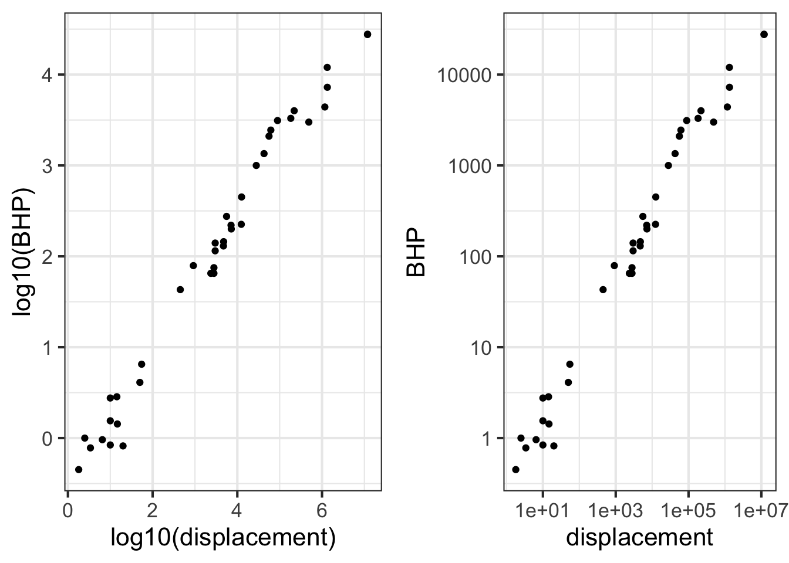

log10(1390) - log10(1)
## [1] 3.14301514 Magnitude
People accomplish a familiar mathematical task with hardly any mental effort: comparing two numbers to determine which is bigger. This is easy because we have adopted a system for writing numbers that makes it easy. For the Romans and Europeans up through the 13th century, numbers were hard to work with. For instance, which of these three numbers is bigger? \[\text{MLI or CXII or XXXIII}\]

Now try the same task with Arabic numerals: Which is bigger?
\[\text{512 or 33 or 1051}\] You can see the answer at a glance. The algorithm is straightforward: select the number with the largest number of digits. If there is a tie, refer to the first digit. If there is still a tie, refer to the next digit. In contrast, it takes much more work with Roman numerals. For instance, IC is about fifteen times bigger than VI, even though I is much smaller than V.
14.1 Order of magnitude
We’ll refer to judging the size of numbers by their count of digits as reading the magnitude of the number. To get started, consider numbers that start with 1 followed by zeros, e.g. 100 or 1000. We’ll quantify the magnitude as the number of zeros: 100 has a magnitude of 2 and 1000 has a magnitude of 3. In comparing numbers by magnitude, we way things like, “1000 is an order of magnitude greater than 100,” or “1,000,000” is five orders of magnitude larger than 10.
Many phenomena and quantities are better understood in terms of magnitude than in terms of number. An example: Animals, including humans, go about the world in varying states of illumination, from the bright sunlight of high noon to the dim shadows of a half-moon. To be able to see in such diverse conditions, the eye needs to respond to light intensity across many orders of magnitude.
The lux is the unit of illuminance in the Système international. This table1 shows the illumination in a range of familiar outdoor settings:
| Illuminance | Condition |
|---|---|
| 110,000 lux | Bright sunlight |
| 20,000 lux | Shade illuminated by entire clear blue sky, midday |
| 1,000 lux | Typical overcast day, midday |
| 400 lux | Sunrise or sunset on a clear day (ambient illumination) |
| 0.25 lux | A full Moon, clear night sky |
| 0.01 lux | A quarter Moon, clear night sky |
For a creature active both night and day, the eye needs to be sensitive over 7 orders of magnitude of illumination. To accomplish this, eyes use several mechanisms: contraction or dilation of the pupil accounts for about 1 order of magnitude, photopic (color, cones) versus scotopic (black-and-white, rods, nighttime) covers about 3 orders of magnitude, adaptation over minutes (1 order), squinting (1 order).
More impressively, human perception of sound spans more than 16 orders of magnitude in terms of the energy impinging on the eardrum. The energy density of perceptible sound ranges from the threshold of hearing at 0.000000000001 Watt per square meter to a conversational level of 0.000001 W/m2 to 0.1 W/m2 in the front rows of a rock concert. But in terms of our subjective perception of loudness, each order of magnitude change is perceived in the same way, whether it be from street traffic to vacuum cleaner or from whisper to normal conversation. (The unit of sound measurement is the decibel (dB), with 10 decibels corresponding to an order of magnitude in the energy density of sound.)
Energy density of sound in various situations. Sound at 85 dB, for extended periods, can cause permanent hearing loss. Exposure to sound at 120 dB over 30 seconds is dangerous.
| Situation | Energy level (dB) |
|---|---|
| Rustling leaves | 10 dB |
| Whisper | 20 dB |
| Mosquito buzz | 40 dB |
| Normal conversation | 60 dB |
| Busy street traffic | 70 dB |
| Vacuum cleaner | 80 dB |
| Large orchestra | 98 dB |
| Earphones (high level) | 100 dB |
| Rock concert | 110 dB |
| Jackhammer | 130 dB |
| Military jet takeoff | 140 dB |
6, 60, 600, and 6000 miles-per-hour are quantities that differ in size by orders of magnitude. Such differences often point to a substantial change in context. A jog is 6 mph, a car on a highway goes 60 mph, a cruising commercial jet goes 600 mph, and a rocket passes through 6000 mph on its way to orbital velocity. From an infant’s crawl to highway cruising is 2 orders of magnitude in speed.
Of course, many phenomena are not well represented in terms of orders of magnitudes. For example, the difference between normal body temperature and high fever is 0.01 orders of magnitude in temperature.2 An increase of 1 order of magnitude in blood pressure from the normal level would cause instant death! The difference between a very tall adult and a very short adult is about 1/4 of an order of magnitude.
Orders of magnitude are used when the relevant comparison is a ratio. “A car is 10 times faster than a person,” refers to the ratio of speeds. In contrast, quantities such as body temperature, blood pressure, and adult height are compared using a difference. Fever is 2\(^circ\)C higher in temperature than normal. A 30 mmHg increase in blood pressure will likely correspond to developing hypertension. A very tall and a very short adult differ by about 2 feet.
One clue that thinking in terms of orders of magnitude is appropriate is when you are working with a set of objects whose range of sizes spans one or many factors of 2. Comparing baseball and basketball players? Probably no need for orders of magnitudes. Comparing infants, children, and adults in terms of height or weight? Orders of magnitude may be useful. Comparing bicycles? Mostly they fit within a range of 2 in terms of size, weight, and speed (but not expense!). Comparing cars, SUVs, and trucks? Differences by a factor of 2 are routine, so thinking in terms of order of magnitude is likely to be appropriate.
Another clue is whether “zero” means “nothing.” Daily temperatures in the winter are often near “zero” on the Fahrenheit or Celcius scales, but that in no way means there is a complete absence of heat. Those scales are arbitrary. Another way to think about this clue is whether negative values are meaningful. If so, thinking in terms of orders of magnitude is not likely to be useful.
14.2 Counting digits
Imagine having a digit counting function called digit(). It takes a number as input and produces a number as output. We don’t have a formula for digit(), but for some inputs, the output can be calculated just by counting. For example:
- digit(10) \(\equiv\) 1
- digit(100) \(\equiv\) 2
- digit(1000) \(\equiv\) 3
- … and so on …
- digit(1,000,000) \(\equiv\) 6
- … and on.
The digit() function easily can be applied to the product of two numbers. For instance:
- digit(1000 \(\times\) 100) = digit(1000) + digit(100) = 3 + 2 = 5.
Similarly, applying digit() to a ratio gives the difference of the digits of the numerator and denominator, like this:
- digit(1,000,000 \(\div\) 10) = digit(1,000,000) - digit(10) = 6 - 1 = 4
It is not clear that \(\ln()\) is a better user interface as a pattern-book function than digit(), or, as it is written, \(\log_{10}()\) and
log10(). People find it much easier to count by magnitudes of 10 than by the natural logarithm’s 2.718282….In practice, digit() is so useful that it could well have been one of our basic modeling functions: \[\text{digit(x)} = 2.302585 \ln(x)\] or, in R, log10(). We elected the natural logarithm \(\ln()\) rather than digit() for reasons that will be seen when we study differentiation.
You may have guessed that digits() is handy for computing differences in terms of orders of magnitude. Here’s how:
- Make sure that the quantities are expressed in the same units.
- Calculate the difference between the
digits()of the numerical part of the quantity.
What is the order-of-magnitude difference in velocity between a snail and a walking human? A snail slides at about 1 mm/sec, a human walks at about 5 km per hour. Putting human speed in the same units as snail speed: \[\begin{eqnarray}5 \frac{km}{hr} = \left[\frac{1}{3600} \frac{hr}{sec}\right] 5 \frac{km}{hr} &=& \\
\left[10^6 \frac{mm}{km}\right] \left[\frac{1}{3600} \frac{hr}{sec}\right] 5 \frac{km}{hr} &=& 1390 \frac{mm}{sec}
\end{eqnarray}\] Calculating the difference in digits() between 1 and 1390:
So, about 3 orders of magnitude difference in speed. To a snail, we walking humans must seem like rockets on their way to orbit!
The use of factors of 10 in counting orders of magnitude is arbitrary. A person walking and a person jogging are on the edge of being qualitatively different, although their speeds differ by a factor of only 2. Aircraft that cruise at 600 mph and 1200 mph are qualitatively different in design, although the speeds are only a factor of 2 apart. A professional basketball player (height 2 meters or more) is qualitatively different from a third grader (height about 1 meter).
14.3 Magnitude graphics
To display a variable from data that varies over multiple orders of magnitude, it helps to plot the logarithm rather than the variable itself. Let’s illustrate using the Engine data frame, which contains measurements of many different internal combustion engines of widely varying sizes. For instance, we can graph engine RPM (revolutions per second) versus engine mass, as in Figure 14.2.
gf_point(RPM ~ mass, data = Engines)
In the graph, most of the engines have a mass that is … zero. At least that’s what it appears to be. The horizontal scale is dominated by the two huge 100,000-pound monster engines plotted at the right end of the graph.
Plotting the logarithm of the engine mass spreads things out, as in Figure 14.3.
gf_point(RPM ~ mass, data = Engines) %>%
gf_refine(scale_x_log10())
Note that the horizontal axis has been labeled with the actual mass (in pounds), with the labels evenly spaced in terms of their logarithm. This presentation, with the horizontal axis constructed this way, is called a semi-log plot.
When both axes are labeled this way, we have a log-log plot, as shown in Figure 14.4.
gf_point(RPM ~ mass, data = Engines) %>%
gf_refine(
scale_x_log10(),
scale_y_log10()
)Semi-log and log-log axes are widely used in science and economics, whenever data spanning several orders of magnitude need to be displayed. In the case of the engine RPM and mass, the log-log axis shows that there is a graphically simple relationship between the variables. Such axes are very useful for displaying data but can be hard for the newcomer to read quantitatively. For example, calculating the slope of the evident straight-line relationship in Figure 14.4 is extremely difficult for a human reader and requires translating the labels into their logarithms.
Robert Boyle (1627-1691) was a founder of modern chemistry and the scientific method in general. As any chemistry student already knows, Boyle sought to understand the properties of gasses. His results are summarized in Boyle’s Law.
The data frame Boyle contains two variables from one of Boyle’s experiments as reported in his lab notebook: pressure in a bag of air and volume of the bag. The units of pressure are mmHg and the units of volume are cubic inches.3
Famously, Boyle’s Law states that, at a constant temperature, the pressure of a constant mass of gas is inversely proportional to the volume occupied by the gas. Figure 14.5 shows a cartoon of the relationship.

Figure 14.6 plots out Boyle’s actual experimental data. I
gf_point(pressure ~ volume, data = Boyle) %>%
gf_lm()
You can see a clear relationship between pressure and volume, but it’s hardly a linear relationship.
Plotting Boyle’s data on log-log axes reveals that, in terms of the logarithm of pressure and the logarithm of volume, the relationship is linear.
gf_point(log(pressure) ~ log(volume), data = Boyle) %>%
gf_lm()
Figure 14.7 shows that Boyle’s log-pressure and log-volume data are a straight-line function. In other words:
\[\ln(\text{Pressure}) = a + b \ln(\text{Volume})\]
You can find the slope \(b\) and intercept \(a\) from the graph. For now, we want to point out the consequences of the straight-line relationship between logarithms.
Exponentiating both sides gives \[e^{\ln(\text{Pressure})} = \text{Pressure} = e^{a + b \ln(\text{Volume})} = e^a\ \left[e^{ \ln(\text{Volume})}\right]^b = e^a\, \text{Volume}^b\] or, more simply (and writing the number \(e^a\) as \(A\))
\[\text{Pressure} = A\, \text{Volume}^b\] A power-law relationship!
14.4 Reading logarithmic scales
Plotting the logarithm of a quantity gives a visual display of the magnitude of the quantity and labels the axis as that magnitude. A useful graphical technique is to label the axis with the original quantity, letting the position on the axis show the magnitude.
To illustrate, ?fig-mag-scales-1(left) is a log-log graph of horsepower versus displacement for the internal combustion engines reported in the Engines data frame. The points are admirably evenly spaced, but it is hard to translate the scales to the physical quantity. The right panel in ?fig-mag-scales-1 shows the same data points, but now the scales are labeled using the original quantity.
gf_point(log(BHP) ~ log(displacement), data = Engines)
gf_point(BHP ~ displacement, data = Engines) %>%
gf_refine(scale_y_log10(), scale_x_log10()) 

The tick marks on the vertical axis in the left pane are labeled for 0, 2.5, 5.0, 7.5, and 10. That doesn’t refer to the horsepower itself, but to the logarithm of the horsepower. The right pane has tick labels that are in horsepower at positions marked 1, 10, 100, 1000, and 10000.
Such even splits of a 0-100 scale are not appropriate for logarithmic scales. One reason is that 0 cannot be on a logarithmic scale in the first place since \(\log(0) = -\infty\).
Another reason is that 1, 3, and 10 are pretty close to an even split of a logarithmic scale running from 1 to 10. It’s something like this:
1 2 3 5 10 x
|----------------------------------------------------|
0 1/3 1/2 7/10 1 log(x)It’s nice to have the labels show round numbers. It’s also nice for them to be evenly spaced along the axis. The 1-2-3-5-10 convention is a good compromise; almost evenly separated in space yet showing simple round numbers.
14.5 Exercises
14.6 Drill
Part i What is the correct form for the relationship shown in the graph? 
- \(g(x) \equiv e^{-1.5} e^{10 x}\)
- \(g(x) \equiv 10 e^{-2 x}\)
- \(g(x) \equiv e^{10} e^{-1.5 x}\)
- \(g(x) \equiv 10 x^{-1.5}\)
- \(g(x) \equiv e^{10} e^{-2 x}\)
Part ii What is the correct form for the relationship shown in the graph? 
- \(g(x) \equiv e^{10} x^{-2}\)
- \(g(x) \equiv 10 x^{-2}\)
- \(g(x) \equiv e^{10} e^{-1.5 x}\)
- \(g(x) \equiv e^10 x^{-1.5}\)
- \(g(x) \equiv e^{10} e^{-2 x}\)
Part iii What is the correct form for the relationship shown in the graph? 
- \(g(x) \equiv e^{2} x^{2}\)
- \(g(x) \equiv 2 x^{1.5}\)
- \(g(x) \equiv e^{2} x^{1.5}\)
- \(g(x) \equiv e^2 x^{-1.5}\)
- \(g(x) \equiv e^{2} e^{1.5 x}\)
Part iv The figure shows a horizontal axis for a graph. How can you tell that this is a logarithmic axis? 
- The labels are evenly spaced and each label is a factor of 2 larger than the previous one.
- The labels are all multiples of 2.
- Trick question. It’s not a log scale.
Part v The figure shows a horizontal axis for a graph. How can you tell that this is a logarithmic axis? 
- Trick question. It’s not a log scale.
- The labels are evenly spaced and each label is a factor of 3 larger than the previous one.
- The labels are 1, 3, 5, 10, …
- The 3 label is about halfway between the 1 and 10 label for each decade, and the 1 and 10 labels have the same spacing for every decade.
Part vi The figure shows a horizontal axis for a graph. How can you tell that this is a logarithmic axis? 
- Trick question. It’s not a linear scale.
- Each label is 10 + the previous label.
- The labels are 10, 20, 30, 40, …
- The 3 label is about halfway between the 1 and 10 label for each decade, and the 1 and 10 labels have the same spacing for every decade.
We’re using the Kelvin scale, which is the only meaningful scale for a ratio of temperatures.↩︎
Boyle’s notebooks are preserved at the Royal Society in London. The data in the
Boyledata frame have been copied from this source.)↩︎